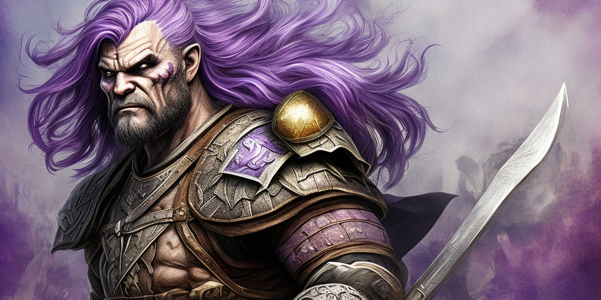

Chapter 1: The Ritual of Rage
Before the Next Full Moon


Before the Next Full Moon
15051.05.06
一早，冒險者們便離開了大學城，朝著方努爾市的方向前進。因為出生於方努爾市的米多莉較為熟悉，他便帶領著大家，前往搭船去方努爾市的拉克渡口。這個時節很接近當地津菈教的節慶：勇者節，因此渡口的人很多都想前往附近的聖拉雅米島。
途中，冒險者們結識了同樣要渡船的兩名旅客，人類聖騎士莉蓮娜和半妖精拉芙。他們告訴冒險者們前方的橋斷了，無法前往黃金海的渡口，因此需要繞路。
米多莉找到了當地的津菈教教堂–津菈升天教堂（津菈升天教堂），裡面的韓神父表示在附近的渡口搭船，如果非津菈教徒，會收取高額的船票，因此在米多莉的詢問下，韓神父指引冒險者們去附近的一間房子，並遞給他們一個信封，請他們交給裡面「狂暴戰士幫」的領袖。
抱著懷疑的心，冒險者們來到有著拳頭招牌的房子，敲了敲門，一名有著飄逸紫色長髮的壯漢便開了門。瞭解了冒險者們的來意後，他便邀請冒險者們進入了。
這名壯漢便是狂暴戰士幫在這裡的領袖，澤克。在狂暴戰士幫中，成員都會有個響亮的「鬥名」，而澤克的鬥名是「鬥破蒼穹」。而他身邊的金髮壯漢則是「拳出如龍」烏爾。
了解了冒險者們的狀況後，澤克表示狂暴戰士幫算是津菈教的附屬組織，如果加入，便可以以津菈教徒的身份活動，但狂暴戰士幫只歡迎戰士和武僧等類型的勇者加入，同時也邀請了波，並預先給他了鬥名「抓抓耳朵」，但波對於這兩位看似奇異的人還抱有一些懷疑，沒有馬上答應。澤克和烏爾也對妙語如珠的YHWH頗感認同，願意為不是戰士的他網開一面，邀請他加入狂暴戰士幫，賜予鬥名「舔舔地板」。
冒險者從澤克口中得知，他們的一名成員「巫妖剋星」艾希斯前陣子去聖拉雅米島出任務，卻下落不明，因此希望冒險者們可以接下任務，到島上尋找艾希斯的下落。
澤克帶著冒險者們到渡口附近最熱鬧的酒館「水手之家」用晚餐，服務生帶著大家來到二樓像包廂的空間，但隔壁桌似乎已經有坐人了。澤克向冒險者們介紹坐在隔壁桌的三人，是被稱為「馬林船長」的馬林爵士（同時也被稱為「野三逼逼（意為「真實的勇氣」）伯爵」，以及冒險者們先前已經見過的莉蓮娜和拉芙。
三名新夥伴加入了冒險者們，大家坐成一桌。馬林船長向冒險者們說明他負責開船將大家護送到聖拉雅米島（也被稱為勇士島），同時也是他的封地。近期他們聽說了拉索斯教徒在島上猖獗，綁架島上居民，甚至有偷竊寶石的事件發生。馬林船長也提醒大家在島上要盡可能避免使用魔法，因為魔法被視為津菈的奇蹟。
飯後，澤克和烏爾繞道離開，表示要去採買些東西，讓冒險者們先回到狂暴戰士幫宅邸。YHWH待在水手之家，試圖偷聽馬林船長等三人討論的話題，而喜利・歐喜利則偷偷跟蹤澤克和烏爾，發現他們買了一些顏料，買完後烏爾便折返，而澤克則去了趟鐵匠鋪，請鐵匠幫忙打磨一把看起來十分有價值的劍。其他冒險者們回到房子後在一樓客廳稍作休息。烏爾回來後，薩梅爾看見他在爐火邊正在彈奏魯特琴，便也拿出他的魯特琴，加入了他。波則跑到樓上探索，發現這棟房子有三層樓，二三樓各有五間房間。
睡前，波表示自己有意願加入狂暴戰士幫，澤克便提醒大家隔日早上要一起參與儀式。
當晚夢中，喜利・歐喜利似乎聽見了一個女聲說著「遠港」，看見一座荒涼小島的破敗港口，一個小女孩走下了船，往島上走……
15051.05.07
一早，冒險者們便下樓用早餐了，唯獨YHWH因為身體不適，沒有下來。早餐後，澤克將一樓的木質地板大力掰開，冒險者眼前出現了一個往地下的通道。在澤克的帶領下，冒險者們走到了地下一個圓形的競技場，中間是一個坑洞，準備好要開始進行「狂暴之儀」了。澤克表示是試煉的時候了，他朝著競技場三側的雕像一一介紹：狗頭人是評議委員會長「狂暴之聲」希岡三世；蛇人是「血蛇狂舞」耶內達特；最後則是冒險者見過的「拳出如龍」烏爾。
經過與「雕像」們的激戰後，冒險者們終於勝出。澤克宣布入會儀式通過，雕像們也終於能卸下他們身上的塗裝。澤克帶著大家走回一樓，也得知狂暴戰士幫是過去由一名名叫希岡的狗頭人所創立的，他也是希岡三世的祖先。澤克將一把漂亮的劍遞給冒險者們，表示是艾希斯過去常用的劍「異教徒剋星」，波接過後把他收在身上，而澤克也給了他新的鬥名「撓撓耳朵」。澤克最後給了冒險者們一封要給艾希斯的信，請他們遞給艾希斯。
中午，澤克帶著冒險者們往港口去，準備送冒險者們上船。冒險者們看見昨日的馬林船長、莉蓮娜和拉芙，以及他們在大學城見到的貓人山田。YHWH的身體狀況看起來不太好，幾番確認後，他依然跟著大家一起行動，表示不用擔心。
傳送到沃瓦倫的龍恩，突然感到手臂發熱發癢，一瞬間，眼前一片全白，同時感受到一股強大的力量正在拉扯他。當他再次睜開雙眼時，他正仰躺在一間大房子內。他似乎看見遠處有個人影朝他走來……
15051.05.06
Early in the morning, the adventurers left Great Citadel and headed towards Fannur city. Because he was familiar with Midori who was born in Fannur City, he led everyone to take a boat to the Lark ferry in Fannur City. This season is very close to the local Jingla religious festival: Brave Day, so many people on the ferry want to go to the nearby Saint Rayami Island.
On the way, the adventurers met two passengers who were also on the ferry, the human paladin Liliana and the half-elf Ralf. They told the adventurers that the bridge ahead was broken and they could not reach the ferry to the Golden Sea, so they needed to take a detour.
Midori found the local Keinra Church - Keinra Ascendance Church. Father Han inside said that if you take a boat at the nearby ferry, non-Jinra believers will charge a high fare. Therefore, after Midori's inquiry, Father Han directed the adventurers to a nearby house, handed them an envelope, and asked them to give it to the leader of the "Berserker Gang" inside.
With suspicion in mind, the adventurers came to the house with the fist sign and knocked on the door. A strong man with long flowing purple hair opened the door. After understanding the adventurers' purpose, he invited the adventurers to enter.
This strong man is the leader of the Berserker Gang here, Zek. In the Berserker Gang, each member has a resounding "fighting name", and Zek's fighting name is "Fighting to Break the Sky". The blond man next to him is "Punch Out Like a Dragon" Wull.
After understanding the situation of the adventurers, Zek said that the Berserker Warrior Gang is an affiliated organization of the Jinla Cult. If you join, you can act as a Jinla cultist. However, the Berserker Warrior Gang only welcomes warriors, monks and other types of brave men to join. Beau was also invited, and he was given the fighting name "Zhushua Er" in advance, but Beau I still had some doubts about these two strange-looking people and did not agree immediately. Zek and Wull also agreed with the witty YHWH and were willing to make allowances for him who was not a warrior. They invited him to join the Berserker Gang and gave him the fighting name "Lick the Floor".
The adventurers learned from Zek that one of their members, "Lich Bane" Essis, went on a mission to Saint Rayami Island a while ago, but his whereabouts were unknown. Therefore, they hope that the adventurers can take over the mission and go to the island to find the whereabouts of Essis.
Zek took the adventurers to have dinner at "The Sailor's House", the busiest tavern near the ferry. The waiter took everyone to a private room on the second floor, but the table next to it seemed to be already occupied. Zek introduces the adventurers to the three people sitting at the next table. They are Sir Marlin, known as "Captain Marlin" (also known as "Count Wild San Bibi (meaning "True Courage")), as well as Liliana and Ralf, who the adventurers have already met before.
Three new friends joined the adventurers, and everyone sat at the same table. Captain Marin explained to the adventurers that he was responsible for sailing the ship to escort everyone to Saint Rayami Island (also known as Warrior Island), which was also his fiefdom. Recently, they heard that Rathos cultists were rampant on the island, kidnapping island residents, and even stealing gems. Captain Marlin also reminded everyone to avoid using magic as much as possible on the island, because magic is regarded as Zinla's miracle.
After the meal, Zek and Wull took a detour and left, saying they were going to buy some things so that the adventurers could return to the Berserker Gang mansion first. YHWH stayed at the sailor's house, trying to eavesdrop on the topics discussed by Captain Marin and the other three, while Siri secretly followed Zek and Wull and found that they bought some paint. Wull returned after buying it, while Zek went to the blacksmith shop and asked the blacksmith to help polish a sword that looked very valuable. The other adventurers returned to the house and rested for a while in the living room on the first floor. When Wull returned, Samael saw him playing his lute by the fire, and took out his lute and joined him. Beau ran upstairs to explore and found that the house had three floors, with five rooms on the second and third floors.
Before going to bed, Beau expressed his intention to join the Berserker Gang, and Zek reminded everyone to participate in the ceremony together the next morning.
In the dream that night, Siri seemed to hear a female voice saying "Far Harbor" and saw a dilapidated port on a desolate island. A little girl got off the boat and walked towards the island...
15051.05.07
Early in the morning, the adventurers went downstairs to have breakfast, but YHWH did not come down because he was feeling unwell. After breakfast, Zek vigorously opened the wooden floor on the first floor, and an underground passage appeared in front of the adventurer. Under the leadership of Zek, the adventurers walked to a circular arena underground with a pit in the middle, ready to start the "Rite of Fury". Zek said it was time for the trial, and he introduced the statues on three sides of the arena one by one: the kobold was the chairman of the jury "Voice of Fury" Sigom III; the snake man was "Dance of Blood Snakes" Yennedat; and finally, the "Punch Like a Dragon" Wull that the adventurers had seen.
After a fierce battle with the "statues", the adventurers finally won. Zek announced that the initiation ceremony had passed, and the statues could finally take off their paint. Zek took everyone back to the first floor and learned that the Berserker Gang was founded in the past by a kobold named Sigom, who was also the ancestor of Sigom III. Zek handed a beautiful sword to the adventurers, indicating that it was the sword "Pagan Buster" that Essis used to use. Beau took it and kept it with him, and Zek also gave him a new fighting name "Tickling Ears". Zek finally gave the adventurers a letter to Essis and asked them to hand it to Essis.
At noon, Zek took the adventurers to the port and prepared to send the adventurers onto the ship. The adventurers saw Captain Marin, Liliana and Ralf from yesterday, as well as the cat man Yamada they saw in Great Citadel. YHWH's physical condition did not seem to be very good. After several confirmations, he still followed everyone and said there was no need to worry.
Ron, who was teleported to Vowalon, suddenly felt his arm feel hot and itchy. For a moment, his vision went completely white, and at the same time he felt a strong force pulling him. When he opened his eyes again, he was lying on his back in a large house. He seemed to see a figure walking towards him in the distance...